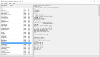
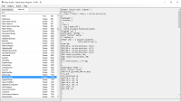
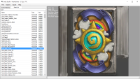
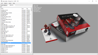
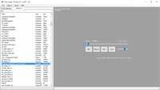
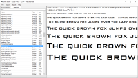
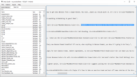
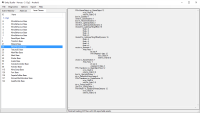

AssetStudio is the continuation of my Importer script for 3ds Max, and comprises almost 3 years of research and reverse engineering of file formats. It has been thoroughly tested with builds from most platforms, ranging from Web, PC, Linux, MacOS to Xbox360, PS3, Android and iOS, and it is currently maintained to be compatible with builds from 2.5.0 up to the latest version.
Current features
- Export to FBX, with complete hierarchy, transformations, materials and textures. Geometry is exported with normals, tangents, UV coordinates, vertex colors and deformers. Skeleton nodes can be exported either as bones or dummy deformers..
- Extraction of assets that can be used as standalone resources:
- Textures: DDS (Alpha8bpp, ARGB16bpp, RGB24bpp, ARGB32bpp, BGRA32bpp, RGB565, DXT1, DXT5, RGBA16bpp)
- PVR (PVRTC_RGB2, PVRTC_RGBA2, PVRTC_RGBA4, PVRTC_RGB4, ETC_RGB4)
- Audio clips: mp3, ogg, wav, xbox wav (including streams from .resS files)
- Fonts: ttf, otf
- Text Assets
- Shaders
- Real-time preview window for the above-mentioned assets
- Diagnostics mode with useful tools for research
{kind=link}
 

{kind=link}
  
{kind=link}
{kind=link}
{kind=link}
  
{kind=link}
{kind=link}
{kind=link}
UI guide
| Item | Action |
|---|---|
| File -> Load file/folder | Open Assetfiles and load their assets. Load file can also decompress and load bundle files straight into memory |
| File -> Extract bundle/folder | Extract Assetfiles from bundle files compressed with lzma or l4z |
| Scene Hierarchy search box | Search nodes using * and ? wildcards. Press Enter to loop through results or Ctrl+Enter to select all matching nodes |
| Asset List filter box | Enter a keyword to filter the list of available assets; wildcards are added automatically |
| Diagnostics | press Ctrl+Alt+D to bring up a hidden menu and a new list |
| Bulid class structures | Create human-readable structures for each type of asset; available only in Web builds! |
Other interface elements have tooltips or are self-explanatory.